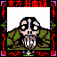

- Welcome to Touhou Wiki!
- Please register to edit. For assistance, check in with our Discord server or IRC channel.
Genjii
Genjii ɡe̞nʑi | |
|---|---|
|
 Genjii in Story of Eastern Wonderland TurtleMore Character Titles | |
| Species | |
| Abilities |
Able to fly in the sky |
| Age |
Unknown, older than Reimu |
| Occupation |
Reimu's pet |
| Location | |
Appearances | |
| Official Games | |
| |
Genjii (玄爺) is a turtle that lives at the Hakurei Shrine. His magical abilities have granted him a long life and the ability to fly, and as Reimu Hakurei cannot fly under her own power prior to Embodiment of Scarlet Devil, he is used as a platform for Reimu to fly on.
Character Basis[edit]
Name and Design[edit]
The kanji for Gen (玄) literally means 'Black' or 'Mysterious'. The kanji for Jii (爺) literally means 'Old Man' or 'Grandfather', which fits his appearange since he has the appearance of an old turtle with a grey beard. He is clearly much older than Reimu, and she often refers to him as "Gramps" in order to mock his age (and as a pun on his name).
After the PC-98[edit]
Genjii hasn't appeared in the Touhou Project since Mystic Square. However, ZUN mentioned in at least two interviews that Genjii is "probably living in the lake at the back of the shrine." In Strange and Bright Nature Deity Chapter 12, when Reimu and Marisa Kirisame were talking about "glowing moss," Reimu said it would be nice to transfer it to the pond in the back of the shrine. Marisa responds that it could grow there on the turtles' backs. It's possible that one of those turtles is Genjii.
Relationship[edit]
- Reimu Hakurei
- Yin-Yang Orb
Genjii has a lot of knowledge of the Yin-Yang Orb, but it's unknown how he knows such knowledge.
Additional Information[edit]
- Genjii only speaks in Story of Eastern Wonderland.
- Because of his ability to fly and speak he is probably a type of youkai, as animals that live very long usually turn into one.
Fandom[edit]
Official Profiles[edit]
Official Sources[edit]
- 1997/08/15 Story of Eastern Wonderland - FUUMAROKU.txt (official profile)
- 1997/12/29 Phantasmagoria of Dim.Dream - appearance only
- 1998/08/14 Lotus Land Story - appearance only
- 1998/12/30 Mystic Square - appearance only
- 2004/10/30 Meiji University talkshow "Dawn of Touhou" (a ZUN Interview) - ZUN stated a comment about Genjii probably living in the back of the shrine (?)
| This page is part of Project Characters, a Touhou Wiki project that aims to write proper descriptions for all official characters of Touhou Project. Please keep the character page guidelines in mind when contributing. |